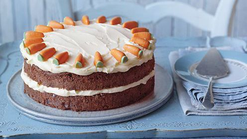

Classic carrot cake recepie

Prepration time
cooking time
less than 3o min
1 to 2 hours
Ingredients
For the carrot cake

- 450ml/16fl oz vegetable oil
- 400g/14oz plain flour
- 2 tsp bicarbonate of soda
- 550g/1lb 4oz sugar
- 5 free-range eggs
- ½ tsp salt
- 2½ tsp ground cinnamon
- 525g/1lb 3oz carrots, grated
- 525g/1lb 3oz carrots, grate
- 150g/5½oz shelled walnuts, chopped
Fot the icing
- 200g/7oz cream cheese
- 150g/5½oz caster sugar
- 100g/3½oz butter, softened
Method
- For the carrot cake, preheat the oven to 180C/160C Fan/Gas 4. Grease
and line a 26cm/10in springform cake tin.
- Mix all of the ingredients for the carrot cake, except the carrots
and walnuts, together in a bowl until well combined. Stir in the carrots and walnuts.
- Spoon the mixture into the cake tin and bake for 1 hour 15 minutes,
or until a skewer inserted into the middle comes out clean. Remove
the cake from the oven and set aside to cool for 10 minutes, then
carefully remove the cake from the tin and set aside to cool completely on a cooling rack.
- Meanwhile, for the icing, beat the cream cheese, caster sugar and butter together in a bowl until
fluffy. Spread the icing over the top of the cake with a palette knife.